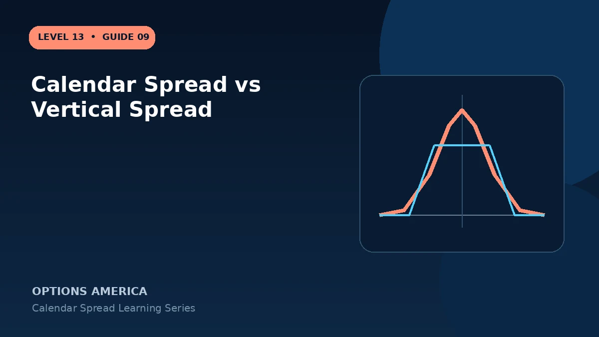

Compare time spreads and same-expiration vertical spreads through strike selection, payoff certainty, Greeks and breakevens.
Structure
A calendar normally uses the same strike and two expirations. A vertical spread uses two strikes and the same expiration, such as a bull call spread or bear put spread.
Payoff calculation
Vertical maximum profit, loss and expiration breakeven can often be calculated exactly at entry. Calendar front-expiration value depends on the remaining option's implied volatility.
Greek focus
Calendars emphasize relative theta and vega across maturities. Verticals often emphasize directional delta with reduced premium exposure, although all Greeks still matter.
Choose by thesis
Use a vertical for a directional price range at one expiration. Use a calendar when the thesis specifically involves target timing, relative decay and volatility term structure.
A practical example
A 100/110 call vertical uses one expiration and caps directional upside. A 30/60-day 100 call calendar uses one strike and targets relative decay near $100.
This simplified example uses selected price, time and volatility assumptions; live results will differ. Live option prices also reflect the underlying price, time decay, rates, dividends, liquidity and transaction costs. Greeks are theoretical estimates, not guarantees.
Frequently asked questions
Which has fixed breakeven?
A standard vertical has a calculable expiration breakeven.
Which uses two expirations?
The calendar.
Can both be debit trades?
Yes, but their risks differ.
Continue the Calendar Spreads cluster
Explore related guides: Double Calendar Spread Explained · How to Adjust a Calendar Spread · Calendar Spread Profit, Loss and Breakeven. For a structured sequence, use the free Level 13 – Calendar Spreads course.
Options involve risk and are not suitable for every investor. This material is educational and is not investment, tax or legal advice. Greeks are theoretical estimates, and contract terms and broker requirements can vary.